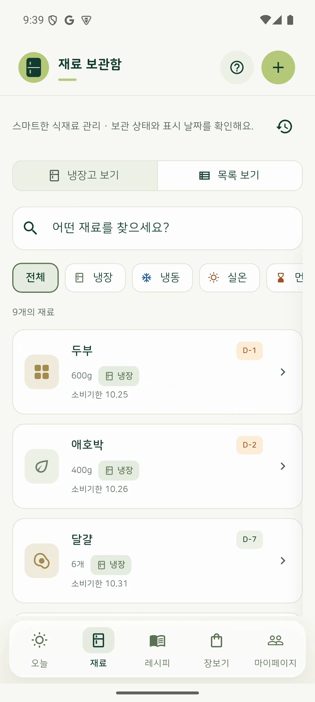

LATEST RELEASE · 2026.10
오늘한끼사둔 재료를 챙기는 일부터,
오늘의 메뉴를 찾는 일까지.
식재료와 소비기한을 관리하고, 보유 재료로 만들 요리를 찾는 모바일 앱입니다. 재료 등록 → 레시피 확인 → 장보기 → 요리 후 재고 정리를 하나의 흐름으로 연결했습니다.
Google Play 출시1인 기획·개발·운영
- 재료 등록 — 영수증 OCR과 포장 날짜 인식, 사용자 확인 후 저장
- 재고 관리 — 냉장·냉동·실온 보관, 표시 날짜와 남은 상태 관리
- 레시피 연결 — 보유 재료 매칭, 부족한 재료 장보기, 요리 후 재고 반영
- 출시·운영 — 인증, 푸시 알림, 운영 DB, Android 배포와 스토어 운영
TODAY HANKKI / 실제 앱 화면

보관 중인 재료와 표시 기한을 한눈에.